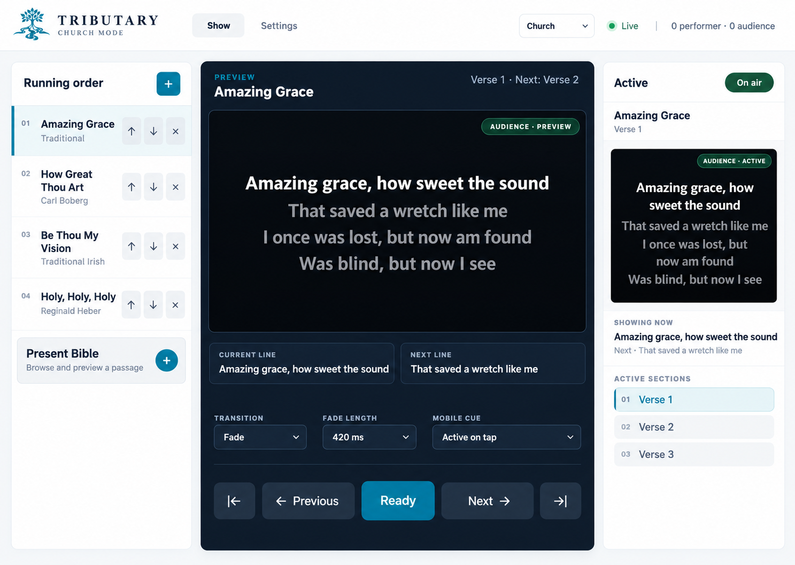
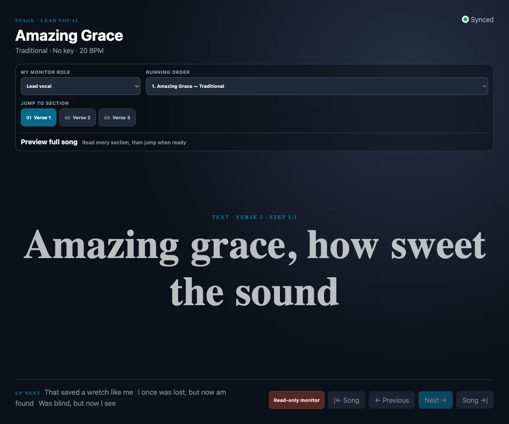

The decision desk
Preview before you commit.
Keep the running order, next section, fade and active output visible in one operator view.
Laptop · desktop · tabletTributary
Prepare · Present · Perform
Live show control · invite-only beta
Tributary gives one operator a calm command centre for lyrics, Scripture, presentations and cues — then carries the right view to every performer and audience screen.
Windows and macOS host · browsers join on the trusted local network
Amazing grace, how sweet the sound
That saved a soul like me.
A room that stays together
Build the running order once. Preview what comes next. Advance the moment when you are ready. Tributary keeps the Controller, Performer and Audience views on the same authoritative show state.
Every screen has one job. The system keeps them in step.

The decision desk
Keep the running order, next section, fade and active output visible in one operator view.
Laptop · desktop · tablet
The confidence view
Give performers the current words, upcoming sections, notes and control they need without crowding the stage.
Phone · tablet · laptopAmazing grace, how sweet the sound
That saved a soul like me.The room view
A distraction-free audience output with lyrics, slides, media and transitions exactly as the Controller sends them.
Projector · TV · browserStart with the way your room works, then let Tributary carry the details.
Church
Build a service order, browse Scripture, present lyrics and keep the room moving together.
Explore ChurchWork
Import supported presentations, arrange meeting content and send a confident audience view.
Explore WorkArtist
Plan arrangements, performer notes and cues while every display follows the live show.
Explore ArtistTell us what you present, perform or lead. We will review pilot fit and arrange access to the appropriate beta build.
Invite-only beta · manual installer delivery · no public checkout